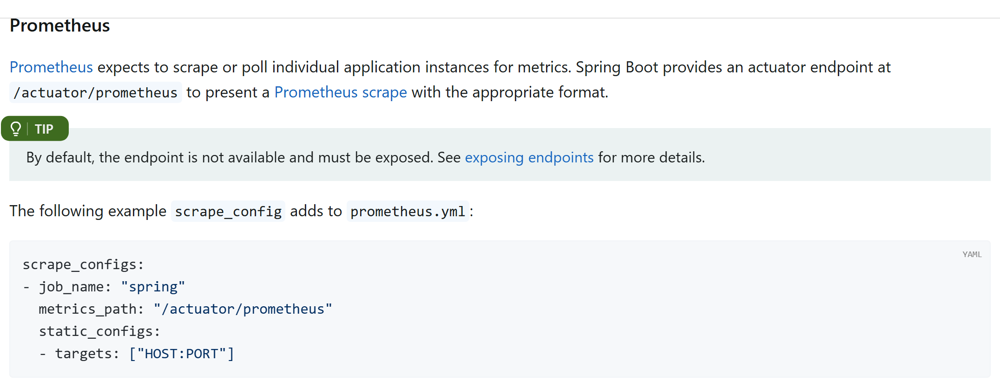
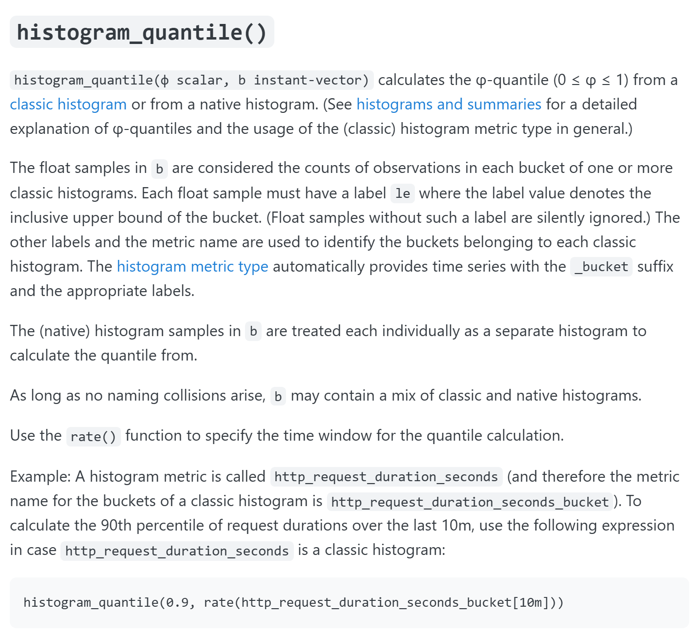

OSS PROJECT INTRO · PROMETHEUS 系列第 4 期:实战场景
上一期我们拿到了 Prometheus 的概念地图——四种指标类型、PromQL 的向量模型、整体架构。这一期把地图用起来:端到端给一个真实的 Web 服务装上监控,从应用侧埋点暴露,到 Prometheus 抓取,再到亲手查出 QPS、错误率、P99 延迟三条曲线,外加一条告警规则。全文基于 Prometheus 3.14.0(系列基准)、Spring Boot 4.1.1(spring.io 当前 GA)与 Micrometer 1.17.1(由 Boot 4.1.1 依赖清单托管,Maven Central 核对),命令、配置与表达式逐字对照官方文档。
场景设定:一个普通的 Spring Boot Web 服务在线上跑着,老板和值班同学只关心三件事——现在多少请求量、有多少在报错、最慢的用户等了多久。演示链一条贯穿:应用侧暴露指标 → Prometheus 侧配置抓取 → Target 变绿 → PromQL 三连 → 运行结果解读 + 告警规则。
上期的概念这期全都用得上:计数器与直方图两种类型决定了两个查询姿势,up 指标是抓取链路的判定器,Pull 模型是整条演示链的骨架——概念落到实地,这才是实战期的意思。
三条曲线先摆上桌,选型思路一句话:先看要回答什么问题,再挑指标和函数。
| 要回答的问题 | 指标来源 | 关键函数 | 为什么是它 |
|---|---|---|---|
| 现在流量多大(QPS) | http_server_requests_seconds_count(计数器) | rate(...[1m]) | 计数器只增不减,看每秒增长率才是流量 |
| 错误占多少比例 | 同一计数器,按 outcome 标签切分 | 分子分母各取 rate 后相除 | 标签是多维模型的筛子,一行表达式切出错误流量 |
| 最慢的用户等多久(P99) | http_server_requests_seconds_bucket(直方图) | histogram_quantile(0.99, ...) | 分位数在服务端按桶估算,应用侧零开销 |
| 错误率超标要有人管 | 上面算出的错误率表达式 | 告警规则 expr + for | 曲线变哨兵,阈值加持续时间防毛刺误报 |
这四行就是本期的"总纲"。指标名 http_server_requests_seconds_* 是 Spring Boot 默认指标 http.server.requests 按 Prometheus 命名惯例转换后的样子——点变下划线,计时器自动补基本单位后缀 _seconds(Micrometer 官方文档口径)。前两条曲线共用一个计数器,P99 单独依赖直方图桶,这是后面第二个钩子的伏笔。
版本先钉死(2026-09-19 核对):Spring Boot 4.1.1 是 spring.io 当前 GA 线;它的依赖清单(spring-boot-dependencies 4.1.1)托管 micrometer 1.17.1——正好也是 Maven Central 上 micrometer-registry-prometheus 的最新稳定版(其上的 1.18.0-M1 是里程碑预发布,生产不追)。依赖里连版本号都不用写。
<dependency>
<groupId>org.springframework.boot</groupId>
<artifactId>spring-boot-starter-actuator</artifactId>
</dependency>
<dependency>
<groupId>io.micrometer</groupId>
<artifactId>micrometer-registry-prometheus</artifactId>
</dependency>Spring Boot 官方文档的原话:运行时类路径上有 micrometer-registry-{system},Spring Boot 就自动配置对应的注册表。起步器 actuator 负责把运维端点装进应用,注册表负责把指标变成 Prometheus 认的暴露格式——一个管"端点",一个管"格式",分工清楚。
第二步,暴露端点。默认只开放 health,把 prometheus 端点加进白名单(src/main/resources/application.yml):
management:
endpoints:
web:
exposure:
include: health,metrics,prometheus官方 endpoints 文档口径:web 侧默认只暴露 health;prometheus 端点"要求类路径上有 micrometer-registry-prometheus 依赖"。动手前先钉版本、再核默认值,不凭记忆写。
启动应用,亲自看一眼指标长什么样:
curl -s http://localhost:8080/actuator/prometheus | head# TYPE http_server_requests_seconds gauge
http_server_requests_seconds_count{method="GET",outcome="SUCCESS",status="200",uri="/api/greet"} 3.0
http_server_requests_seconds_sum{method="GET",outcome="SUCCESS",status="200",uri="/api/greet"} 0.047
http_server_requests_seconds_max{method="GET",outcome="SUCCESS",status="200",uri="/api/greet"} 0.021输出为可复现的演示回显:序列结构与字段严格对照 Micrometer 官方文档的 Timer 口径——计时器固定输出 _count(调用次数)、_sum(总耗时)、_max(窗口内最大耗时)三条序列;标签 exception/method/outcome/status/uri 是 Spring Boot 官方文档列出的默认标签。同一个指标名靠标签区分维度,这就是上期"指标名加标签集是序列身份证"的活体标本。此时还没开直方图,所以看不到 _bucket 序列——伏笔再次出现。

Spring Boot 官方文档实拍:Prometheus 期望逐个抓取应用实例,所以 Boot 提供 /actuator/prometheus 端点;默认不可用,必须显式暴露。下方抓取示例同样是文档原文——job_name "spring"、metrics_path 指向 actuator 端点。来源:docs.spring.io/spring-boot/reference/actuator/metrics.html(2026-09-19 实拍)。
照着官方示例改 prometheus.yml,在抓取配置里追加一个作业:
scrape_configs:
- job_name: "spring"
metrics_path: "/actuator/prometheus"
static_configs:
- targets: ["localhost:8080"]$ ./promtool check config prometheus.yml
Checking prometheus.yml
SUCCESS: 0 rule files found小规模练习用静态名单就够了;上期讲的服务发现(K8s 里按 Pod 自动发现)是同一件事的自动化版本,延伸阅读在文末。改完先让第二期认识的官方检查工具把关,再热加载或重启。
判定时刻——打开 9090 的 Status → Targets 页,或者直接查官方合成指标:
up{job="spring"}up{instance="localhost:8080", job="spring"} 1State 一栏是绿色的 Up,对应 up 指标记 1;抓取失败记 0。这个绿的意义:Pull 模型打通了最后一公里,你的应用第一次被监控系统按时上门拜访。没变绿别慌——翻车清单在文末,先对号入座。
sum by (uri) (rate(http_server_requests_seconds_count{job="spring"}[1m])){uri="/api/greet"} 0.83
{uri="/actuator/prometheus"} 0.066官方函数文档口径:rate 计算"范围向量内时间序列每秒的平均增长率",并且"先取 rate,再做聚合"。为什么不能直接看计数器当前值?上期讲类型时说过:计数器只增不减,进程重启还从零再来——单调的数字没有剧情,增长率才是流量。数值为演示值:主接口一分钟约 50 次,折合每秒 0.83。
sum(rate(http_server_requests_seconds_count{outcome="SERVER_ERROR"}[1m]))
/ sum(rate(http_server_requests_seconds_count[1m]))0.041outcome 是 Spring Boot 官方文档列的默认标签:2xx 记 SUCCESS、5xx 记 SERVER_ERROR(还有 4xx 的 CLIENT_ERROR 可按需切换)。分子取服务器错误的增长率,分母取全部请求的增长率,相除得比例——返回 0.041 即错误率约 4.1%(演示值)。曲线平缓说明稳,突然抬头就按 uri 标签下钻找元凶。
直方图桶默认不开。先在 application.yml 加一行,重启生效:
management:
metrics:
distribution:
percentiles-histogram:
http.server.requests: truehistogram_quantile(0.99,
sum by (le) (rate(http_server_requests_seconds_bucket{job="spring"}[1m])))0.187Micrometer 官方文档原话:启用百分位直方图会新增 ${name}_seconds_bucket 序列,"如果需要 histogram_quantile() 这类基于桶的查询,就启用百分位直方图"——不提前给桶,再好的分位数函数也算不出,这是本期第二个钩子。表达式形状对齐 Prometheus 官方函数文档:分位参数在前,桶序列先取 rate、按 le 标签聚合在后(官方示例 histogram_quantile(0.9, sum by (le) (rate(http_request_duration_seconds_bucket[10m]))));按接口下钻时把 uri 加进 by 列表即可。返回 0.187(演示值):最慢的 1% 请求等在这条线附近。

官方函数文档实拍:每个桶样本必须带 le 标签(桶上界),"Use the rate() function to specify the time window for the quantile calculation"——分位数的时间窗口由 rate 指定。来源:prometheus.io/docs/prometheus/latest/querying/functions(2026-09-19 实拍)。
三条曲线齐了,最后把错误率变成哨兵。规则文件 web-alerts.yml(挂进主配置的 rule_files 列表):
groups:
- name: web.rules
rules:
- alert: WebHighErrorRate
expr: sum(rate(http_server_requests_seconds_count{outcome="SERVER_ERROR"}[1m]))
/ sum(rate(http_server_requests_seconds_count[1m])) > 0.05
for: 1mALERTS{alertname="WebHighErrorRate", alertstate="firing"} 1表达式就是 05 节算过的错误率,阈值 5%,for 一分钟——持续超标才触发,毛刺不误报。触发后 Prometheus 自动生成 ALERTS 序列(官方《Alerting rules》口径)。再往下游的 Alertmanager 去重、分组、路由,第 1 期的架构图里给过位置,本系列点到为止。
曲线会说话,而且要互相佐证:
这套读法没有玄学:每一条都对应今天亲手查过的表达式和标签。指标选对了,排障就是"先看曲线、再下钻",而不是登服务器翻箱倒柜。
每题点击选项立即反馈 · 共 4 题
1. 查 QPS 为什么用 rate(http_server_requests_seconds_count[1m]),而不是直接查计数器当前值?
2. 不加任何配置,P99 分位数为什么算不出来?
3. 错误率表达式的分子分母各取了 rate 之后才相除,为什么不拿两个计数器当前值直接相除?
4. prometheus.yml 里指向 Spring Boot 的 job,关键的两行是?
分位数不能跨桶集合平均:histogram_quantile 只对"一组完整的桶"计算,sum by 决定了桶怎么分组,也就决定了分位数的粒度。sum by (le) 把所有接口的桶合并成一组,算出的是全服务 P99——适合回答"用户体验整体如何",接口之间的快慢互相稀释,一个慢接口可能被大流量快接口淹没。sum by (le, uri) 按接口各算各的,能立刻看到"哪个接口在拖后腿"——适合排障下钻;代价是序列条数乘上接口数,告警规则要逐条配或者配合 label_replace。官方函数文档给的聚合示例正是 sum by (job, le):聚合维度按需选择,但 le 永远必须在 by 列表里——漏掉它,不同桶上界的样本混在一起,结果直接作废。这题的元认知:直方图的聚合粒度是查询时决定的,这也是把桶放到服务端而不是应用端算分位数的原因之一。
先说结论:阈值和持续时间都是"信噪比"参数,要按业务的痛感定,而不是抄模板。去掉 for:评估间隔(本期 15 秒)里任何一个毛刺——一次部署重启、一秒网络抖动——都会立刻触发告警,值班同学被狼来了训练两周后,真故障来了也没人看群了;for 1m 要求错误率连续约 4 个评估周期超标才开火,专门过滤这种抖动。阈值改 0.1%:对内网工具可能合理(千分之一的错误都算事故),对面向用户的服务则太苛刻——依赖方偶发超时、爬虫打出的 4xx 都能顶破它,告警天天响;反过来阈值放到 20%,等它触发时用户早就在社交媒体上替你告警了。实操上还有一层:错误率表达式在"分母趋近零"(没流量)时会出现 NaN 或被放大,严谨的规则要加 and sum(rate(...[1m])) > 0 这类流量守卫。这套"阈值 + 持续时间 + 守卫条件"的三件套,就是从曲线到告警的全部工程学。
带走这四条:
这套监控你已经能照着装上。下一期我们进源码,看抓取、存储与查询是怎么实现的——Pull 的调度循环长什么样、时序数据怎么落盘、PromQL 引擎怎么把表达式跑成结果。Primary source:Spring Boot 官方文档 · Metrics(Actuator)——/actuator/prometheus 端点、暴露属性与抓取配置示例的出处;PromQL 函数口径见 Prometheus 官方 Query Functions;依赖坐标见 Maven Central · micrometer-registry-prometheus 1.17.1。
延伸阅读(本站其他课程线,不重讲):